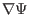
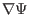

Next, we consider the form of the linearized MHD equations in toroidal devices
(e.g. tokamak). In these devices, there exist magnetic surfaces. The motion of
plasma along the surface and perpendicular to the surface are very different.
Thus, it is useful to decompose the perturbed quantities into components lying
on the surface and perpendicular to the surface. Following Ref.
[3,4], we write the displacement vector and perturbed
magnetic field as
and
 |
(65) |
where
with
the
poloidal magnetic flux within a magnetic surface and  being an arbitrary
constant and (In the process of deriving the eigenmode equation, we do not
need the specific definition of
being an arbitrary
constant and (In the process of deriving the eigenmode equation, we do not
need the specific definition of  . What we need is only that
 is a vector in the direction of
and thus
is
perpendicular to both
. What we need is only that
 is a vector in the direction of
and thus
is
perpendicular to both
 and
). Taking scalar
product of the above two equations with
,
and
). Taking scalar
product of the above two equations with
,
 , and
, respectively, we obtain
, and
, respectively, we obtain
Next, we derive the component equations for the induction equation
(37) and momentum equation (35). The derivation is
straightforward but tedious. Those who are not interested in these details can
skip them and read directly Sec. 3.7 for the final form of the
component equations.
Subsections
yj
2015-09-04